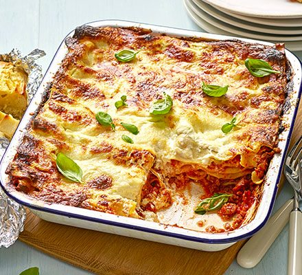

Homemade lasagna

Lasagna Ingredients
The Allrecipes community adores this lasagna recipe because it's incredibly
customizable, so you can easily alter the ingredient list to suit your needs.
If you want to stay true to the original recipe, though, these are the ingredients
you'll need to add to your grocery list:
Ingredients
- 2 skinless, boneless chicken breast halves - cut into bite-size pieces
- 1 clove garlic, crushed.
- ½ cup all-purpose flour
- ½ cup margarine
- ¼ cup fresh lemon juice
- ½ cup chopped fresh mint leaves
Steps
- In a medium bowl, mix together the chicken pieces and garlic.
- Toss with the flour just to coat, and shake off excess.
- Heat the margarine in a large skillet over medium-high heat.
- Add the chicken pieces; cook and stir until browned.
- Add the mint leaves and lemon juice, cover and steam for about 5 minutes, just until the chicken is cooked through